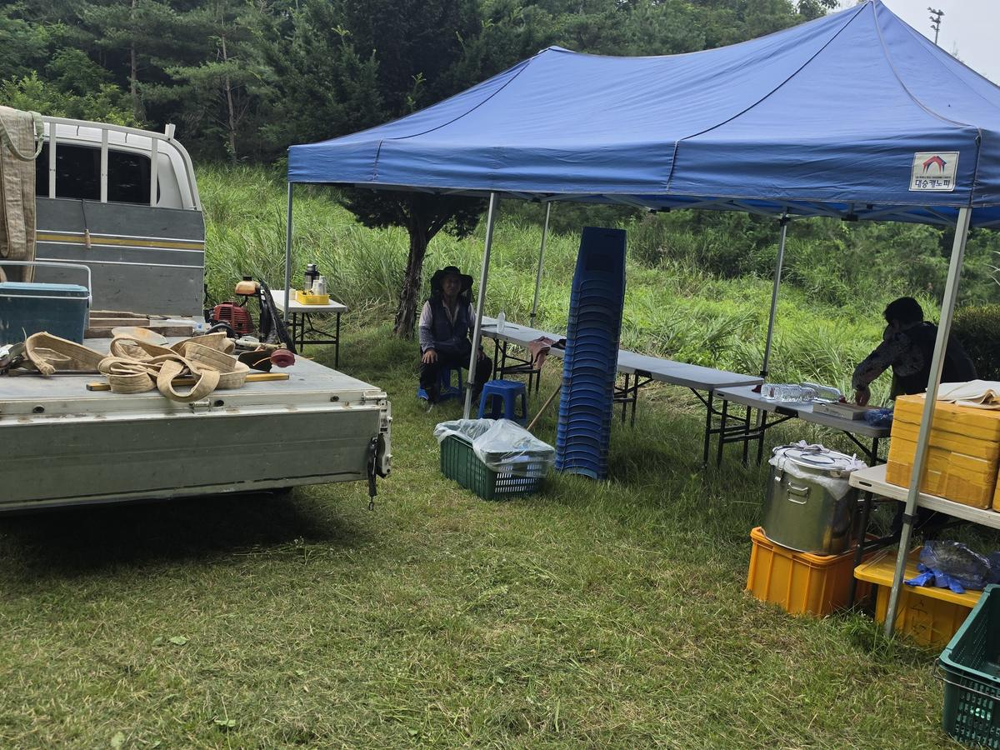
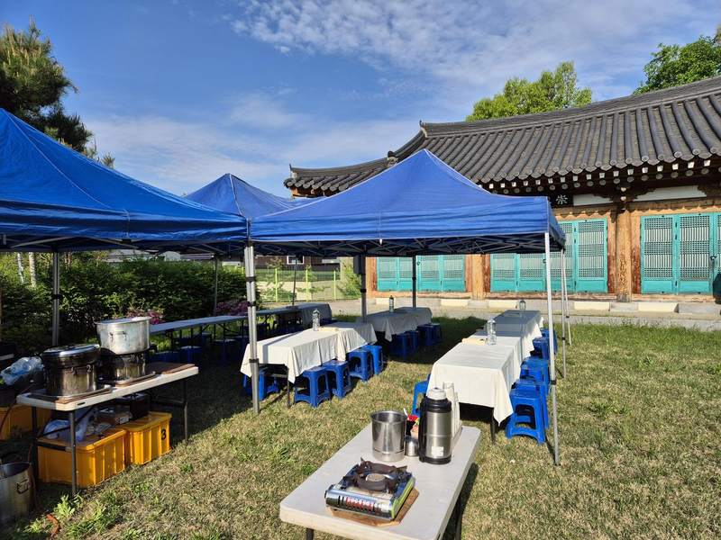
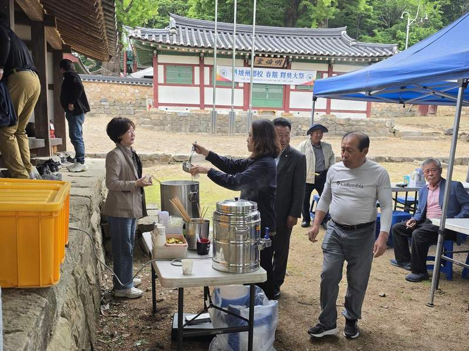
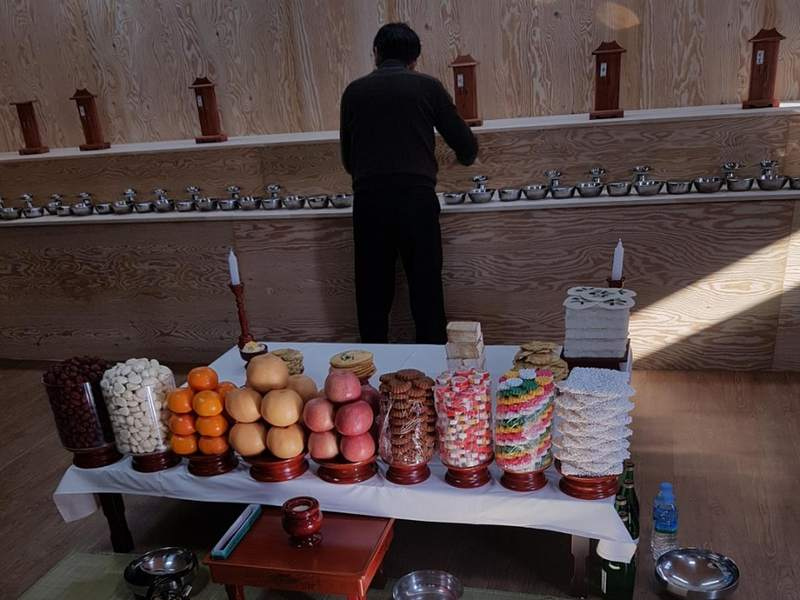
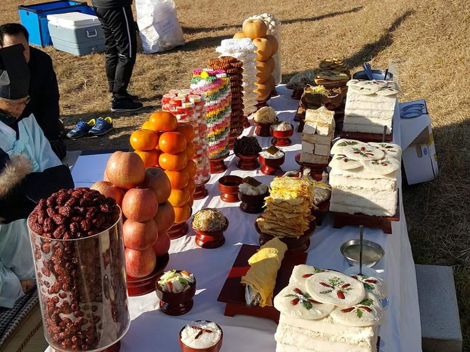

시제상차림 · 제사상차림 · 출장음식
정성을 다한 상차림,
어디든 찾아가겠습니다
종중 시제와 묘사, 가정의 제사상부터
체육대회·모임·마을잔치 출장음식까지 정성을 다해 준비합니다.

소개
격식은 지키고, 정성은 더합니다
푸드벨은 종중의 시제·묘사부터 가정의 제사상까지 우리 전통 예법에 맞춰 준비하는 출장음식 전문 서비스입니다. 제실, 산소, 자택 등 장소를 가리지 않고 직접 찾아가 상을 차려드립니다.
전통 격식
지방·차례상 예법에 맞춘 진설로 격식 있는 상차림을 준비합니다.
어디든 출장
제실·문중 산소·공원묘지·자택 등 현장으로 직접 찾아가 세팅합니다.
정갈한 재료
과일, 전, 육포, 나물까지 정성껏 준비한 신선한 재료를 사용합니다.
맞춤 상차림
모시는 위(位)의 수와 규모에 맞춰 상차림 구성을 조정해드립니다.
준비하는 모습





갤러리
실제 준비한 상차림
푸드벨이 직접 준비한 시제·제사상입니다. 사진을 클릭하면 크게 볼 수 있습니다.
문의
편하게 연락 주십시오
시제상차림·제사상차림부터 문중 행사 출장음식 견적까지, 편하게 연락 주시면 자세히 안내해드립니다.
-
운영시간
평일 09:00 - 18:00 (새벽·주말 출장 사전 문의)
-
상담 안내
모시는 위(位)의 수, 장소, 날짜만 알려주셔도 바로 안내해드립니다.
-
출장 지역
서울 전역 · 경기 · 충청 일부
지금 바로 전화 상담
010-5353-3477평일 09:00 - 18:00
전화로 문의하기 문자로 문의 남기기 카카오톡으로 문의하기문 닫은 시간에도 문자로 남겨주시면 다음 날 바로 연락드립니다.